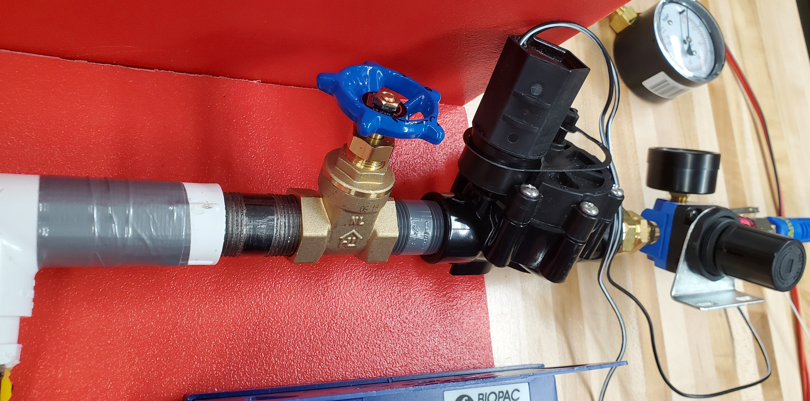

COVID-19 Emergency Response: Low-Cost Ventilator Design
The project aimed to engineer a low-cost, DIY ventilator using off-the-shelf components from local supply stores to address the shortage of ventilators in low-resource hospitals or hospitals running out of ventilators during the COVID-19 pandemic.
Resilience in Action
During my undergraduate studies, I was involved in an initiative undertaken by the biomedical engineering department of my institution to engineer a low-cost, DIY ventilator during the early stages of the COVID-19 pandemic. As a part of the project team, I contributed to the hardware development of the ventilation system, utilizing my talent as a "maker" to help source off-the-shelf components from local supply stores. Despite the challenging restrictions and regulations imposed by the pandemic, the team was able to successfully develop a working prototype of the low-cost ventilator, demonstrating resourcefulness, creativity, and interdisciplinary collaboration.
My involvement in this project provided me with valuable practical experience in managing real-world challenges, especially in navigating the regulations and restrictions associated with a rapidly evolving public health crisis. Working with experts from various fields, including biomedical engineering, mechanical engineering, and software development, allowed me to develop my skills in cross-disciplinary collaboration and innovative thinking. Overall, this project serves as an excellent example of how interdisciplinary collaboration and resourcefulness can be harnessed to address urgent societal needs, and I am proud to have been a part of it
Rapid Prototyping
 v1 planning
v1 planning

v1 inlet
 v1
v1
 diy peep valve
diy peep valve
 peep valve
peep valve
final electronics
project planning 1
 project planning 2
project planning 2